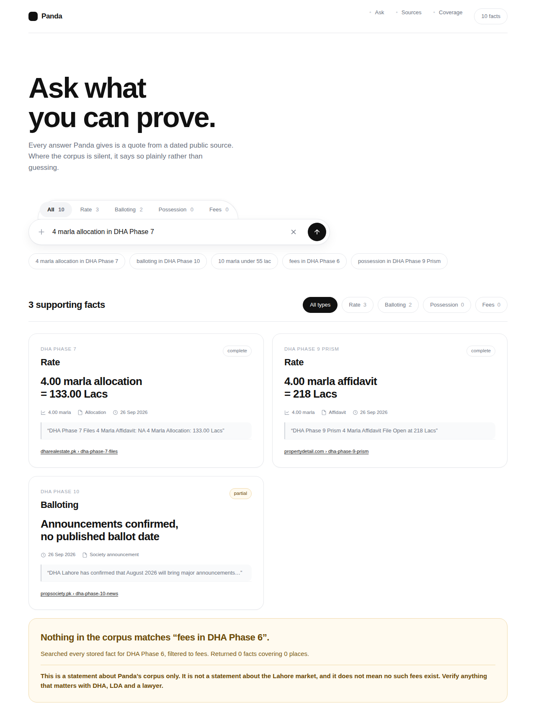
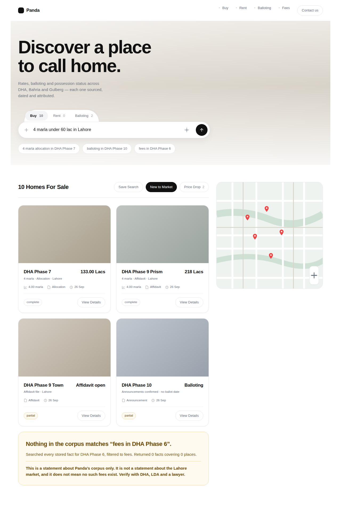
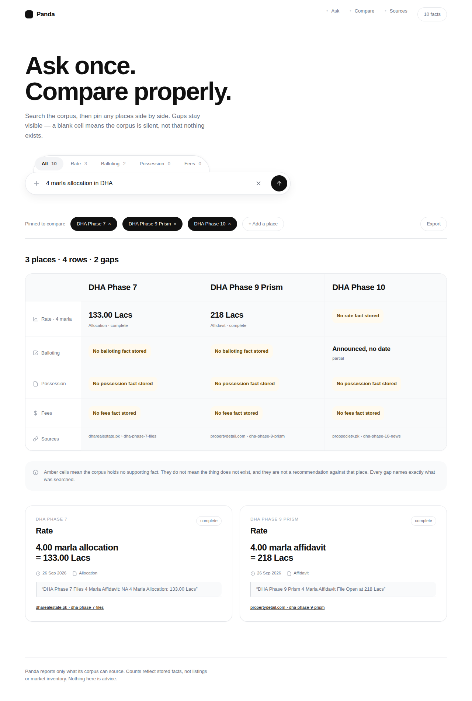

Design directions · not built yet
All three use the same extracted design system: heavy display type, white canvas, hairline borders, large radii, the pill search bar with a segmented tab group sitting on top of it, and pills used throughout. Only the framing differs.
Studied from Behance gallery 253821509 · tokens.css holds the
extracted system. Tabs filter and show honest counts — Possession 0, Fees 0.

Facts rendered as cards. No photos, no map, no inventory counts.

The reference built faithfully: photo cards, price headlines, map, marketing sections.

D1’s search surface, plus pinned places compared side by side.
D2 is the faithful reproduction, and it is the one that most directly contradicts what this project is for. It says “10 Homes For Sale”, shows a map with pins, and then — twenty lines lower — says “nothing in the corpus matches”. A reader meets both in one scroll.